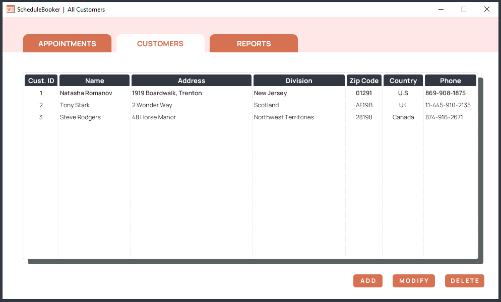
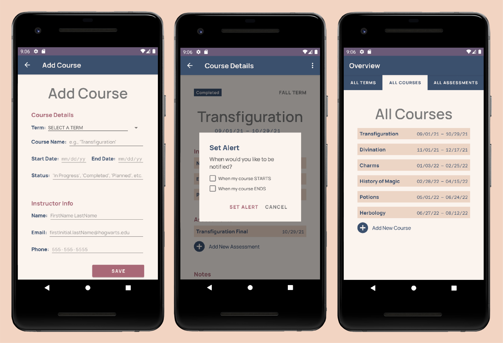
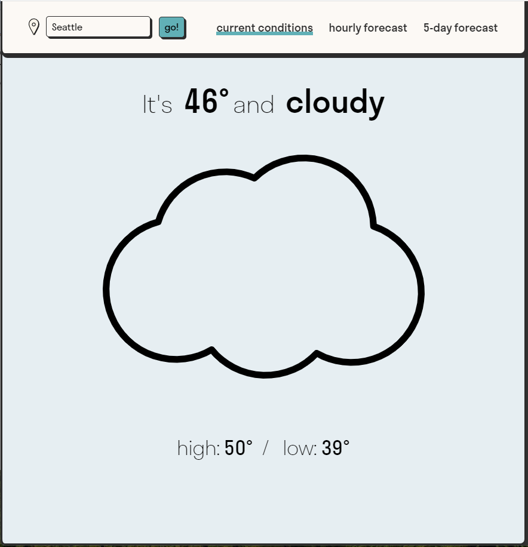

Portfolio
Desktop Software - ScheduleBooker
JAVA | SQL | FXML | CSS3
A robust appointment-scheduling desktop program for managing customers and their appointments.
Notable functionalities: authentication with MySQL database, create/read/update/delete capabilities for customer profiles and appointments, language/date/time localization, and input verification/error-handling.
View on GitHubAndroid Mobile App - TermTracker
JAVA | SQL | FXML
A mobile application for Android students to track information pertaining to their terms, courses, and tests.
Notable functionalities: Create/read/update/delete capabilities for terms/courses/tests/notes, banner notifications for term/course start and end dates, and sharing feature for sending notes via email or SMS.
View on GitHubWeb App - Weather
JAVASCRIPT | CSS3 | HTML5 | APIS
A sleek web app for checking current and future weather conditions. Lookup weather in your current location, or choose a custom one. Built from scratch using AccuWeather API.
Notable functionalities: Auto-detection of user location, location search feature, UI night/day updates based on locale timezone.
View on GitHub